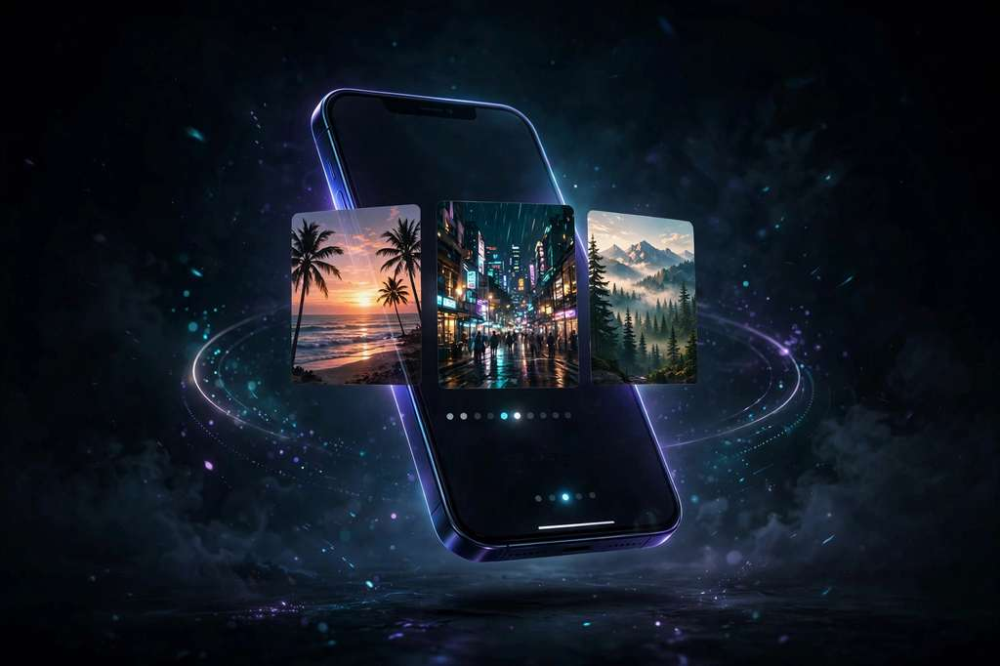

Choose a short moment from a video and make a new MP4 in your browser — then turn it into a Live Photo with All To Live. No upload. Your media stays on your device.
Start trimming See how it worksThe website edits locally. All To Live handles the native iPhone finish.
Open a video from your device, set the start point and a 1–5 second duration. The trim happens in the browser — nothing uploads.
Save the new MP4 to Files. Safari can't hand the file to another app or write to Photos, so keep it in Files first.
Open All To Live on iPhone, choose that MP4, refine its cover frame, and save the Live Photo to your library.
Free to use · private by design · short H.264 MP4 or MOV under 35 MB works best.
The source video stays in your tab. The trimmed MP4 is created on your device — no FFmpeg download, no server round-trip.
The browser creates a new MP4 for the selected range with the chosen audio preserved.
All To Live is where you create the Live Photo and save it into your photo library — the part Safari can't do.